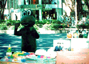
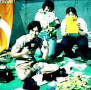

カエルな街頭店員！
カエルになってカエルグッズ売ろう
|

|
|

|
|
かえるの姿でカエルグッズを販売する。この当たり前の光景に、道行く人もこれならなんの違和感もないであろう！下は販売に従事するカエル主義的人民のお姿
|
【東京発=けろけろよしだ同志記者】原宿駅から明治神宮に向かうJRをまたぐ橋の上。「ござ」いっぱいのカエルグッズ。思わず足をとめてしまいました。
私はそこで計￥１９００を投資していろんなカエルグッズを入手した。明治神宮に参拝に行き、戻ると店番のお兄さんがでかいカエルに化けていた。
周囲に溶け込むカエル風景
【全国かえる奉賛会】カエルになりきって、カエルものを販売する。それはごく自然な光景だ。周囲の風景にも溶け込み、まったく違和感がない。さあ、だれにはばかることなく、カエルものを販売する人は、カエルになって売ってみよう！！けろけろ吉田記者、レポートありがとねー。
彼らは、映画の資金作りをするために、カエルグッズを販売しているようです。さあ、全国のカエルファンは、いますぐ彼らを捜して、グッズを購入しよう！！
映画割引券もついているカエルジャンプ
【東京発=けろけろよしだ同志記者】カエルぬいぐるみ店員が販売しているオリジナルカエルキャラクターグッズってのが可愛い！あの、昔懐かしいポンプで空気を送るとジャンプするってやつの現代版というの感じなんだ。全部で7色、かわいい名前つき。おまけに天使の輪と羽つきなんだもの。１匹500円。買うしかない！そして付帯権利として、映画のスポンサーというくすぐったい肩書きと、映画の３００円割引券がついてくるのだ。ほかにも、オリジナルのかえるシールもある。
スポンサー探しのキャラバン隊は全国を巡っているらしく、もしかすると「あなたの街にも」。今年の12月末にクランクインをめざしているらしい。そうそうかえるちゃんは7000個限定。できれば7色全部ほしい…。
ホームページも発見
【福岡発=げこげこ大王７世】彼らは、インターネットでもカエルだらけのホームページを持っていた！そうして、全国各地のカエルショップで、カエルグッズを委託販売しているようだったので、大王様は、特にお願いして『福岡市にも進出してほしい』と陳情したのである。
かえる新聞公募カエルなファッション写真を大募集
【全国かえる奉賛会】毎年恒例の←いつから恒例になったのであろうか(笑)カエルファッションショーの季節になりました。自慢のカエルファッションで決めたお写真をご送付ください。すでに一人応募してきているので、まとめて紹介するよー。夏だけど季節に関係ないので、カエルの帽子とかカエルの傘とか、カエルの下着とかでもなんでもいいですよー。お気に入りのカエル服と小物で飾ったお写真をお待ちしています。
カエルコレクションへ出展物も大募集
【東京発=堀田理佳さま】『KRKR-MTG』のページでもご案内してますが、カエルコレクション展へ出展してもらえるものを今、大募集中です。
一つでも多くのものを展示したいと思っています。よろしくお願いいたします。詳細は『KRKR-MTG』のページへ。
|